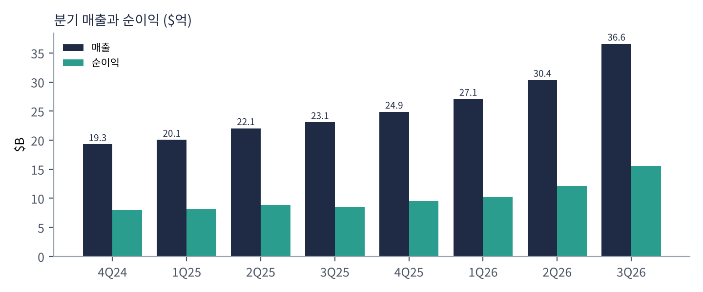
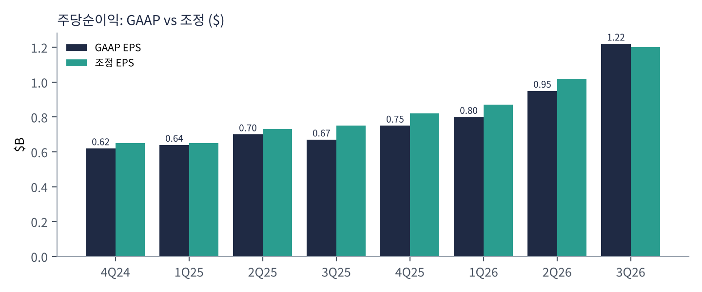
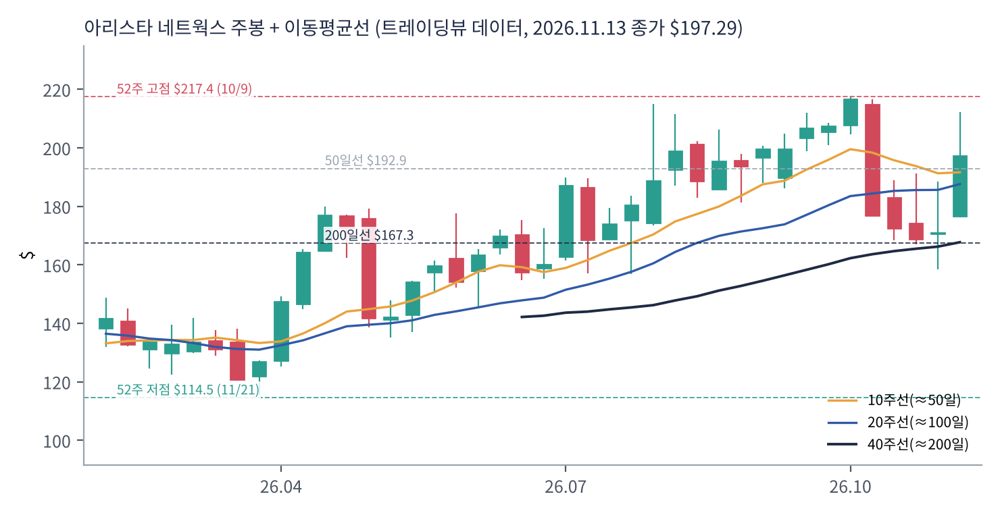
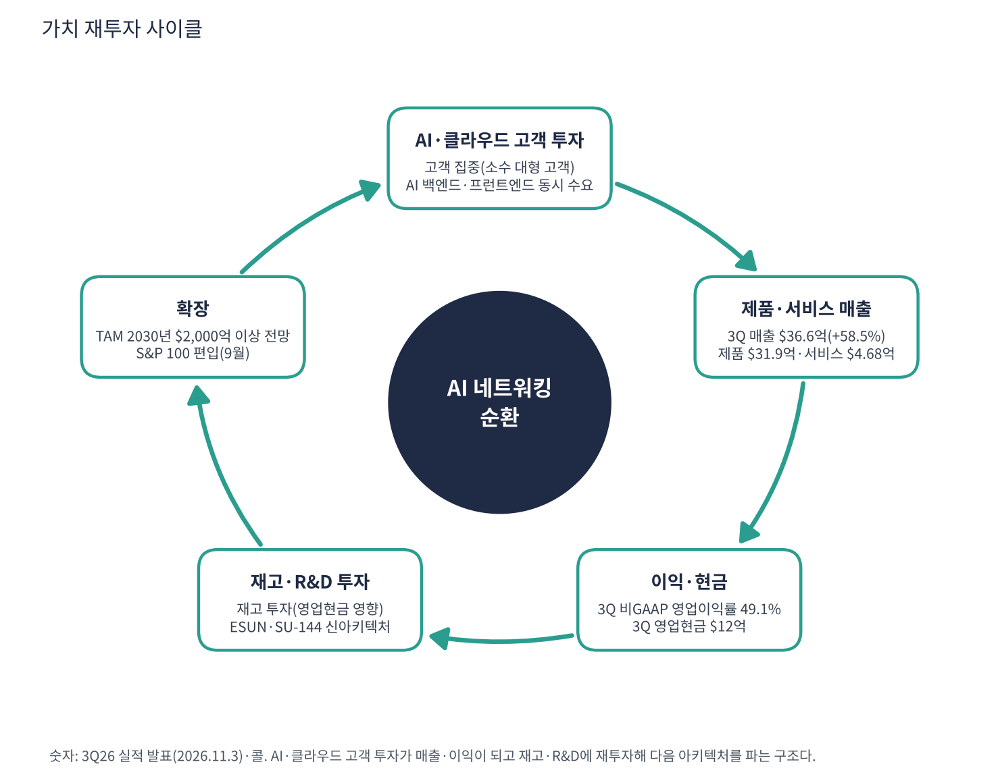

아리스타 네트웍스는 데이터센터·AI 클러스터용 이더넷 스위치와 소프트웨어(EOS)를 파는 네트워크 회사다. AI 투자로 매출이 +58.5% 늘고 이익률이 49%에 이르지만, 소수 대형 고객 의존과 PEG 1.33이 부담인 회사다.
| 항목 | 내용 |
|---|---|
| 종목 | Arista Networks (ANET) · NYSE · 데이터센터 네트워킹 · 캘리포니아 산타클라라 |
| 멀티플 | PER 53.0배(TTM) · P/S 22.21배 (11/13 종가 $197.29) |
| 최근 분기(3Q26) | 매출 $36.6억(+58.5%), GAAP EPS $1.22, 비GAAP EPS $1.20, 비GAAP 영업이익률 49.1% |
| 가이던스(4Q26) | 매출 $39~40억, 비GAAP 영업이익률 48~49%, 비GAAP EPS $1.26~1.30 |
| 현금·부채 | 스캐너: 현금 $143.6억, 차입금 없음, TTM 잉여현금 $50.2억 |
| 직책 | 인물 | 역할·특징 |
|---|---|---|
| 회장·CEO | 제이슈리 울랄 | AI·클라우드 네트워킹 리더. 'Arista 2.0' 전략 |
| CFO | 샨텔 브레이트하우프트 | 3Q를 매출·순이익·EPS 모두 사상 최고라고 설명 |
경영 스타일: '오픈 이더넷 표준으로 AI 네트워크를 넓힌다'. AMD·Arm·브로드컴·메타·마이크로소프트 등과 랙 규모 아키텍처(ESUN, Etherlink SU-144)를 공개했다. 3Q에 S&P 100에 편입됐다.
7800 AI Spine, EOS 통합 소프트웨어, SRv6 기반 분산 AI 패브릭(최대 100만 XPU).
AI 연산 확장 방식 전체를 이더넷으로 묶겠다는 방향이며, TAM은 2030년 $2,000억 이상으로 제시했다.
다음 실적발표(4Q26)는 세 가지 질문에 답하는 자리다.
질문 1. 매출이 가이던스($39~40억)를 넘는가?
| 확인할 숫자 | 좋아지면 | 나빠지면 |
|---|---|---|
| 4Q 매출 $39~40억, 비GAAP EPS $1.26~1.30, 2026 매출 약 $133억(+48%) | 가이던스 이상이면 ②매출 고리가 유지된다 | 미달이면 AI 투자 시점 변동 우려가 커진다 |
질문 2. 총이익률·영업이익률이 유지되는가?
| 확인할 숫자 | 좋아지면 | 나빠지면 |
|---|---|---|
| 비GAAP 영업이익률 48~49%(3Q 49.1%), 관세·부품 부담 | 유지되면 ③이익 고리가 견고하다 | 하락하면 오픈 표준 경쟁이 가격을 압박한다는 신호다 |
질문 3. 2027 성장 가이던스는?
| 확인할 숫자 | 좋아지면 | 나빠지면 |
|---|---|---|
| 2027 매출 증가 약 38~40%(약 $185억) 전망(회사 제시) | 확인·상향이면 PEG 부담이 줄어든다 | 하향이면 성장 둔화 신호다 |
한 줄 판정 규칙: 첫 질문이 가이던스 이상이면 약한 고리(고객 집중)가 완화되고, 마진이 내려가면 PEG 1.33의 근거가 약해진다.
일정: 2027-02-15 예정(트레이딩뷰 일정, 회사 확정 확인 필요).
| 분기 | 매출 | 순이익 | EPS | 조정 EPS | 특이 사항 |
|---|---|---|---|---|---|
| 4Q24 | $19.3억 | $8.0억 | 0.62 | 0.65 | |
| 1Q25 | $20.1억 | $8.1억 | 0.64 | 0.65 | |
| 2Q25 | $22.1억 | $8.9억 | 0.70 | 0.73 | |
| 3Q25 | $23.1억 | $8.5억 | 0.67 | 0.75 | |
| 4Q25 | $24.9억 | $9.6억 | 0.75 | 0.82 | |
| 1Q26 | $27.1억 | $10.2억 | 0.80 | 0.87 | |
| 2Q26 | $30.4억 | $12.1억 | 0.95 | 1.02 | |
| 3Q26 | $36.6억 | $15.6억 | 1.22 | 1.20 | 3Q 매출 +58.5%(상장 후 최고), GAAP EPS가 비GAAP보다 높음 |


값은 트레이딩뷰 스캐너 분기 이력이다(주식분할 반영). 조정 EPS는 트레이딩뷰 Reported(비GAAP)다. 3Q26 GAAP EPS가 비GAAP보다 높은 것은 주식보상 관련 세금 혜택 등 영향으로 보인다(확인 필요). 분기 설비투자는 구하지 못했다.
흐름 요약: 매출이 4Q24 $19.3억에서 3Q26 $36.6억으로 늘었다. 조정 EPS는 $0.65에서 $1.20으로 올랐다.
| 항목 | 값 | 비고 |
|---|---|---|
| 3Q 제품 매출 | $31.9억 | 전년 $19.1억 |
| 3Q 서비스 매출 | $4.68억 | 전년 $3.97억 |
| 2026 매출 가이던스 | $133억(+48%) | 4번째 상향 |
| 2027 성장 전망 | +38~40%(약 $185억) | 회사 제시 |
제품이 서비스보다 훨씬 빠르게 늘고 있다. 고객별·지역별 비중 표는 이번에 구하지 못했다(고객 집중은 위험 요인으로 회사가 공시).
아리스타는 'AI·클라우드 시대의 데이터센터 이더넷 표준을 이끄는 것'을 목표로 한다.
| 축 | 최근 움직임 |
|---|---|
| 표준 | ESUN·오픈 이더넷 랙 규모 아키텍처 |
| 제품 | AI 스파인·SU-144·보안 기능 확장 |
| 규모 | 2026 매출 $133억, 2027 +38~40% 전망 |

| 이동평균 | 값 | 종가 대비 | 해석 |
|---|---|---|---|
| 5일선 | $194.36 | +1.5% | 현재가가 위 |
| 20일선 | $180.51 | +9.3% | 현재가가 위 |
| 50일선 | $192.93 | +2.3% | 현재가가 위 |
| 100일선 | $187.65 | +5.1% | 현재가가 위 |
| 200일선 | $167.35 | +17.9% | 현재가가 위 (+18%) |
주봉 흐름: 52주 고점 $217.41(10/9), 52주 저점 $114.52(11/21). 현재가 $197.29는 200일선 $167.35보다 위, 50일선 $192.93보다 위에 있다.
| 규칙 | 기준 | 현재 값 | 신호 |
|---|---|---|---|
| 장기 추세 필터 | 종가 vs 200일선 | $197.29 > $167.35 | 매수 |
| 중장기 교차 | 50일선 vs 200일선 | $192.93 > $167.35 | 매수 |
| 단기 교차 | 20일선 vs 50일선 | $180.51 < $192.93 | 매도 |
| 돈키언 채널 | 55일 고가 $217.41 / 저가 $158.34 | 중간값 $187.88 위 | 매수 |
| 1개월 모멘텀 | 21거래일 수익률 | +6.3% (기준 $185.58) | 매수 |
| 3개월 모멘텀 | 63거래일 수익률 | -2.2% (기준 $201.80) | 매도 |
| 6개월 모멘텀 | 126거래일 수익률 | +39.0% (기준 $141.97) | 매수 |
| 12개월 모멘텀 | 252거래일 수익률 | +46.2% (기준 $134.98) | 매수 |
| 종합 (8개 평균) | +0.50 | 매수 우위 |
해석: 8개 신호 중 매수 6개, 매도 2개(점수 +0.50, 매수 우위)다. 14일 ATR $13.20 (6.7%).
| 가격·조건 | 무엇이 바뀌나 | 의미 |
|---|---|---|
| 20일선이 50일선 위로 | 20/50 교차 | 매도 → 매수 |
| $201.80 돌파 | 3개월 기준가 | 매도 → 매수 |
| $167.35 돌파 | 200일선 | 이탈하면 매수 → 매도 |
| 50일선이 200일선 위로 | 50/200 교차 | 이탈하면 매수 → 매도 |
| $187.88 돌파 | 돈키언 중간값 | 이탈하면 매수 → 매도 |
| 구분 | 가격대 | 근거 |
|---|---|---|
| 저항 1 | $217.41 | 55일 고점 |
| 저항 2 | $217.41 | 52주 고점 |
| 지지 1 | $194.36 | 5일선 |
| 지지 2 | $192.93 | 50일선 |
점수는 +0.50(매수 우위)다. 14일 ATR은 $13.20로 현재가의 6.7%다. 가까운 저항 $217.41을 종가로 넘는지와 가까운 지지 $194.36를 지키는지가 신호 전환의 기준이다. (내 가정, 매매 권유 아님)
| 악재 요인 | 내용 | 강도 |
|---|---|---|
| 고객 집중 | 소수 대형 고객에 매출 집중(회사 위험 공시) | 중간 |
| 관세·공급 | 미국 관세 상승·수출 규제·부품 공급 제약 | 중간 |
| 경쟁·표준 | 오픈 표준 확산 시 가격·마진 압박 가능 | 중간 |
| 밸류에이션 | PER 53배, P/S 22배, PEG 1.33 | 높음 |
| 티커 | 회사 | PER(TTM) | PEG | P/S | EPS 성장(YoY) |
|---|---|---|---|---|---|
| ANET | 아리스타 | 53.0배 | 1.33 | 22.21배 | +42% |
| CSCO | 시스코 | 25.5배 | 0.66 | 6.06배 | +42% |
| AVGO | 브로드컴 | 44.3배 | 0.46 | 19.98배 | +100% |
| CIEN | 시에나 | 62.6배 | 0.18 | 7.13배 | +363% |
| MRVL | 마벨 | 51.6배 | – | 16.03배 | – |
| NVDA | 엔비디아 | 20.6배 | 0.17 | 13.32배 | +125% |
ANET 첫 행은 스캐너 값이다. 조정 PEG는 약 1.24(내 계산)다. MRVL은 EPS 성장률이 산출되지 않았다.
아리스타는 현금성 자산이 $143.6억이고 차입금이 없는 순현금 회사이며 TTM 잉여현금이 $50.2억이다. 3Q 영업현금은 $12억으로 재고 투자가 일부 영향을 줬다.
| 지표 | 값 | 계산·출처 | 해석 |
|---|---|---|---|
| 현금 | $143.6억 | 스캐너 | 차입금 없음 |
| 총차입금 | $0 | 스캐너 | 순현금 약 $143.6억 |
| TTM 잉여현금흐름 | $50.2억 | 스캐너 | TTM 매출 $118.9억 대비 약 42.2%(내 계산) |
| TTM EBITDA | $53.1억 | 스캐너 | TTM 매출 대비 약 44.6%(내 계산) |
| 기준 | 값 | 비고 |
|---|---|---|
| P/S (TTM) | 22.21배 | 스캐너 |
| 동종 | CSCO 6.1, AVGO 20.0, CIEN 7.1, MRVL 16.0, NVDA 13.3 | 11/13 스캐너 |
해석: P/S 22배는 네트워크 동종(CSCO 6배, CIEN 7배)보다 크게 높고 AI 반도체(AVGO 20배)와 비슷하다. 잉여현금 마진이 42%로 높아 P/S가 높은 이유를 일부 설명한다.
| 지표 | 값 | 판정 |
|---|---|---|
| PER (GAAP TTM) | 53.0배 | 스캐너 |
| PER (조정 TTM) | 약 50.5배 | $197.29 ÷ 최근 4분기 조정 EPS $3.91(내 계산) |
| TTM 잉여현금 마진 | 약 42.2% | $50.2억 ÷ 매출 $118.9억(내 계산) |
| EBITDA 마진 | 약 44.6% | $53.1억 ÷ $118.9억(내 계산) |
| 방식 | PER | EPS 성장률 | PEG | 판정 |
|---|---|---|---|---|
| 트레이딩뷰 (GAAP TTM) | 53.0배 | +41.7% | 1.33 | 정상 성장 구간 |
| 조정 EPS (내 계산) | 50.5배 | +40.6% | 약 1.24 | 최근 4분기 $3.91 ÷ 직전 4분기 $2.78 |
판정: PEG 1.33(스캐너), 조정 기준 약 1.24로 1.0을 넘어 투자 적격 구간(≤1.0)에는 들어오지 못한다.EPS 성장 약 +41%가 가격에 이미 반영된 수준이다.

아리스타의 사이클은 AI·클라우드 고객 투자 → 제품·서비스 매출 → 이익·현금 → 재고·R&D 투자 → 확장이다. 번 현금으로 재고와 신아키텍처에 투자하고 시장을 넓힌다.
| 고리 | 현재 숫자 | 고리 강도 | 약해지는 신호 |
|---|---|---|---|
| ① AI·클라우드 고객 투자 | 3Q 매출 +58.5% | 강함 | 소수 고객 의존 |
| ② 제품·서비스 매출 | 제품 $31.9억, 서비스 $4.68억 | 강함 | AI 투자 시점 변동 |
| ③ 이익·현금 | 영업이익률 49.1%, 3Q 영업현금 $12억 | 강함 | 관세·부품 비용 |
| ④ 재고·R&D 투자 | 재고 투자, SU-144·ESUN | 보통 | 재고 증가로 현금 감소 |
| ⑤ 확장 | TAM 2030 $2,000억+ | 보통 | 오픈 표준 경쟁(마진) |
구조: ①②③이 강하지만 ①의 고객이 소수에 집중돼 있다. 한 고객의 투자 시점이 흔들리면 사이클 전체 속도가 변한다.